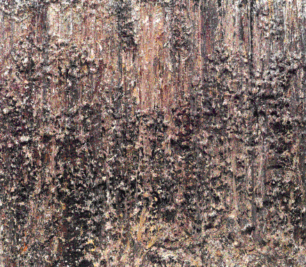

| In the late 1960s, Larry Poons abandoned his minimalist
"dot and blip" paintings
for much more richly textured creations one critic described as "geological ... muddy
... alluvial." |
| Poons pointedly refuses to mention imagery when discussing his work.
In an interview with John Zinsser, Poons said of his paintings "they're going to stand or
fail ultimately on their visual content, not on their storybook content." |
| Nevertheless, understanding his method suggests he had no topographical reference in
mind. |
| He prepares a canvas by first affixing an undersurface of lightweight
material, polyester fibers, bits of foam toys, and the like.
Then he suspends the canvas vertically and flings buckets of paint on it. |
| Viscosity and color of the paint,
drying time between impacts, force and direction of the throw, all these are
variables with which Poons experiments. |
| What comes out, ultimately, is a collection
of large blobs, surrounded by a halo of smaller blobs, themselves decorated with
still smaller blobs, and so on. |
| Little wonder Daniel Robbins
describes Poons' later work as fractal. |
| Taking Poons' Merton Eves as an example, Robbins
notes this painting |
| "insists on being viewed at different distances. Traversing the
room while stalking this picture is to experience the structure and color of
Merton Eaves on a great many scales." |
|
| Robbins likens this to Mandelbrot's
description of scaling, one of the fundamental notions of fractal geometry. |
| Also, Robbins sees self-similarity in Poons' paintings.
The halo of dots described above hints at this. |
| Robbins' language is almost lyrical. |
| "If we examine the blob still
more closely, an activity that also increases wonderment at the complete fusion of form
and color under our eyes, we are struck by the detail in which each speck of color-form,
down to the most minute observation we can make even with a magnifying glass, repeats
the configuration of the lump or wiggle on which we focussed. In other words, one
receives detail repeated down to the limits of visual sensibility." |
|
| As an example, here is Poons' Rum Boat. |
|  |